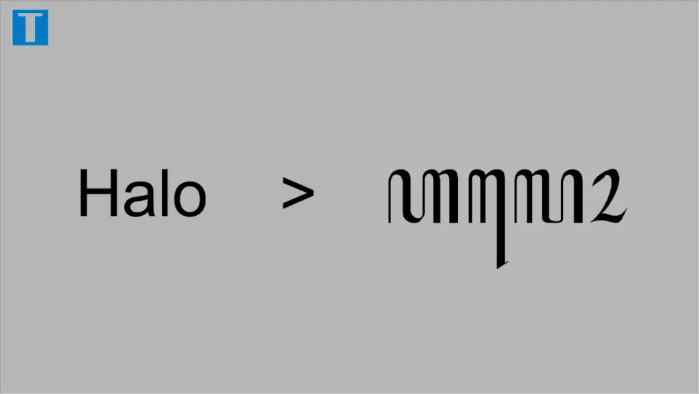

Translate Aksara Jawa ke Latin
Updated: 24 Mei 2022 oleh Tedi Eka

Aksara Jawa adalah sistem tulisan abugida yang terdiri dari sekitar 20 hingga 33 aksara dasar, tergantung dari penggunaan bahasa yang bersangkutan. Seperti aksara Brahmi lainnya, setiap konsonan merepresentasikan satu suku kata dengan vokal inheren /a/ atau /ɔ/ yang dapat diubah dengan pemberian diakritik tertentu.
Generator Translate Latin - Aksara Jawa
Copied

Transliterasi Aksara Jawa - Latin
Mengenal Apa Itu Aksara Jawa
Aksara Jawa adalah sebuah peninggalan budaya yang harus dilestarikan. Dengan berkembangnya zaman dan teknologi, sebenarnya aksara Jawa dapat dibuat secara online. Anak muda zaman sekarang seharusnya harus belajar dan mengerti budaya dengan mengakses aksara Jawa online.
Sekarang untuk belajar dan membuat aksara Jawa tidak harus diajarkan oleh orang lain. Dengan mengaksesnya online baik itu aplikasi atau melalui website menjadi salah satu pilihan mudah. Banyak anak muda yang belajar aksara Jawa secara online, maka sama saja dengan melestarikan budaya.
Translate aksara jawa menggunakan kamera
Sampai saat ini belum ada aplikasi yang mampu mengenali foto aksara jawa melalui kamera. Karena memang agak rumit. Kebanyakan aplikasi saat ini hanya mampu mendeteksi aksara latin saja.
Apabila Anda ingin menggunakan kamera untuk translate tulisan latin ke aksara jawa, saat ini ada satu aplikasi yang mempunyai fitur tersebut. Aplikasi itu adalah Bagaskara yang dikembangkan oleh Prieyudha Akadita S.
Berikut ini cara untuk menggunakan aplikasinya:
- Download dan install aplikasi Bagaskara
- Buka aplikasi tersebut.
- Klik ikon kamera yang ada di sudut kanan bawah.
- Ambil foto tulisan yang ingin ditranslate. Pastikan dalam keadaan jelas hasil fotonya.
- Jika foto sudah jelas, klik OK. maka akan otomatis keluar hasilnya dalam aksara jawa.